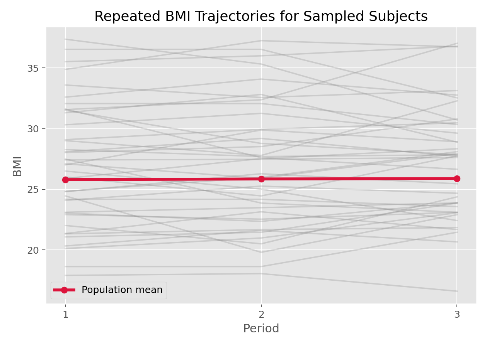

生存分析与纵向数据 · 04·01
线性混合效应模型
Linear Mixed-Effects Model, LMM
线性混合效应模型（Linear Mixed-Effects Model, LMM）
§1
方法概览
1.1 定义
线性混合效应模型用于分析重复测量或层级数据中的连续结局，在固定效应之外加入随机效应来刻画个体间异质性和组内相关性。
1.2 它主要解决什么问题
- 研究问题：同一个体被重复测量时，平均趋势是什么，不同个体的偏离模式又是什么。
- 适用任务：纵向连续结局建模、随机截距 / 随机斜率建模。
- 常见医学场景：多次随访 BMI、胆固醇、血压、实验室指标的变化趋势分析。
1.3 直觉理解
LMM 可以理解为“每个受试者都有一条自己的回归线”，而这些个体回归线又围绕一条总体平均回归线波动。
§2
数学形式
2.1 核心公式
$$ \begin{aligned} Y_{ij} &= \mathbf{X}_{ij}^\top\boldsymbol{\beta} + \mathbf{Z}_{ij}^\top\mathbf{b}_i + \epsilon_{ij} \\ \mathbf{b}_i &\sim N(\mathbf{0}, \mathbf{D}) \\ \epsilon_{ij} &\sim N(0, \sigma^2) \end{aligned} $$
2.2 参数或统计量含义
- 固定效应 $\boldsymbol{\beta}$：总体平均趋势。
- 随机效应 $\mathbf b_i$：个体特异性的偏移，如随机截距或随机斜率。
- $\mathbf D$：随机效应协方差矩阵。
- $\sigma^2$：个体内残差方差。
- REML：常用于方差成分估计。
2.3 关键假设
- 同一主体内部存在相关性，不再满足独立观测。
- 连续结局在给定随机效应后近似正态。
- 随机效应与误差项相互独立。
§3
数据形式与输入输出
3.1 适合的数据形式
- 自变量类型：时间、处理组、年龄、性别等。
- 因变量类型：连续型。
- 数据结构：同一主体多行记录的 long format。
- 是否适合高维数据：不是高维首选。
- 是否适合缺失较多数据：比重复测量 ANOVA 更灵活，但仍需关注缺失机制。
- 是否适合删失数据：不直接适合删失结局。
- 是否适合重复测量数据：非常适合。
3.2 示例表格
下面是 Framingham_data.csv 中典型的 long format 结构，同一个 RANDID 在多个 PERIOD 出现多次：
| RANDID | PERIOD | BMI | TOTCHOL | PREVHYP | SEX |
|---|---|---|---|---|---|
| 6238 | 1 | 28.73 | 250.0 | 0 | 1 |
| 6238 | 2 | 29.43 | 260.0 | 0 | 1 |
| 6238 | 3 | 28.50 | 237.0 | 0 | 1 |
| 11263 | 1 | 30.30 | 228.0 | 1 | 1 |
| 11263 | 2 | 31.36 | 230.0 | 1 | 1 |
3.3 输入与产出
输入
- 输入数据：long format 的重复测量数据。
- 关键变量：个体 ID、时间、结局、协变量。
- 需要预处理的内容：长表整理、时间编码、缺失检查。
产出
- 模型对象/统计结果：固定效应、随机效应方差、REML / ML 拟合结果。
- 参数估计：总体趋势和个体间变异。
- 预测结果：个体拟合轨迹、随机效应 BLUP。
- 不确定性指标：标准误、区间估计、方差成分。
§4
适用场景
- 适合：纵向连续结局、个体间基线水平和变化速度都不同的情况。
- 不适合：二元或计数结局；目标是总体平均效应且不关心个体效应时。
- 使用前需要特别检查的点：long format、随机效应结构、时间变量形式、缺失模式。
§5
实现
常用包：
statsmodels
import statsmodels.api as sm
model = sm.MixedLM.from_formula(
"BMI ~ PERIOD + SEX",
groups="RANDID",
re_formula="~PERIOD",
data=df
)
result = model.fit(reml=True)
print(result.summary())
常用包：
nlmelme4
library(nlme)
fit <- lme(
fixed = BMI ~ PERIOD + SEX,
random = ~ PERIOD | RANDID,
data = df,
method = "REML"
)
summary(fit)
§6
结果如何解释
- 核心结果看什么：固定效应趋势、随机截距 / 斜率方差。
- 每个主要参数如何解释：例如
PERIOD的固定效应是总体平均变化趋势；随机斜率反映个体变化速度差异。 - 临床或医学意义如何表达：比单纯均值比较更适合回答“随时间变化是否不同”。
- 常见误读：随机效应不是“噪声项”而已，它本身就是个体差异的重要组成。
§7
推荐可视化
- spaghetti plot。
- 个体轨迹 + 总体平均轨迹。
- 随机效应分布图。
7.1 图像示例
下图用 spaghetti plot 展示样本受试者的 BMI 轨迹，并叠加总体平均趋势。

§8
优势、局限与常见坑
优势
- 自然处理组内相关性。
- 可同时建模总体趋势和个体差异。
- 对不平衡重复测量更灵活。
局限
- 模型设定比普通回归更复杂。
- 方差结构选择会影响结论。
- 对非正态结局不合适。
常见坑
- 把重复测量数据当独立样本直接做线性回归。
- 随机效应结构设得过于复杂。
- 不区分 ML 和 REML 的使用目的。
§9
与相近方法的区别
- 和线性回归的区别：LMM 显式建模个体内相关性。
- 和 GEE 的区别：LMM 更偏向 subject-specific 解释，GEE 更偏向 population-average。
- 和 GLMM 的区别：GLMM 把结局扩展到非高斯类型。
§10
医学研究中的典型应用
- BMI、胆固醇等连续指标的多次随访分析。
- 治疗前后连续实验室指标的纵向变化。
- 个体生长曲线或衰退曲线建模。
§11
相关方法
§12
参考资料
- Pinheiro JC, Bates DM. Mixed-Effects Models in S and S-PLUS. Springer; 2000.
- statsmodels Developers.
statsmodels.regression.mixed_linear_model.MixedLM. statsmodels API Reference. https://www.statsmodels.org/stable/generated/statsmodels.regression.mixed_linear_model.MixedLM.html （访问日期：2026-07-02） - CRAN. Package
nlme: Linear and Nonlinear Mixed Effects Models. https://cran.r-project.org/web/packages/nlme/index.html （访问日期：2026-07-02）
— 黑盒词典 · 04·01 —